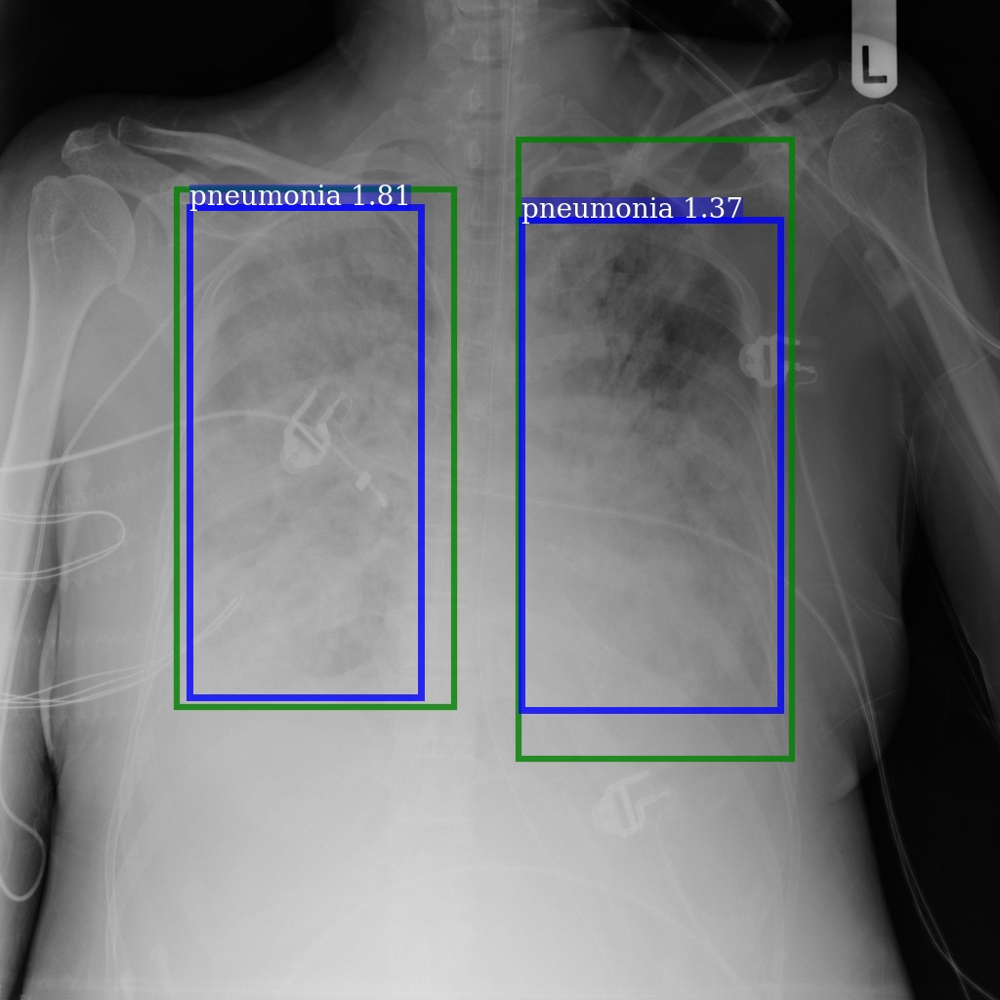
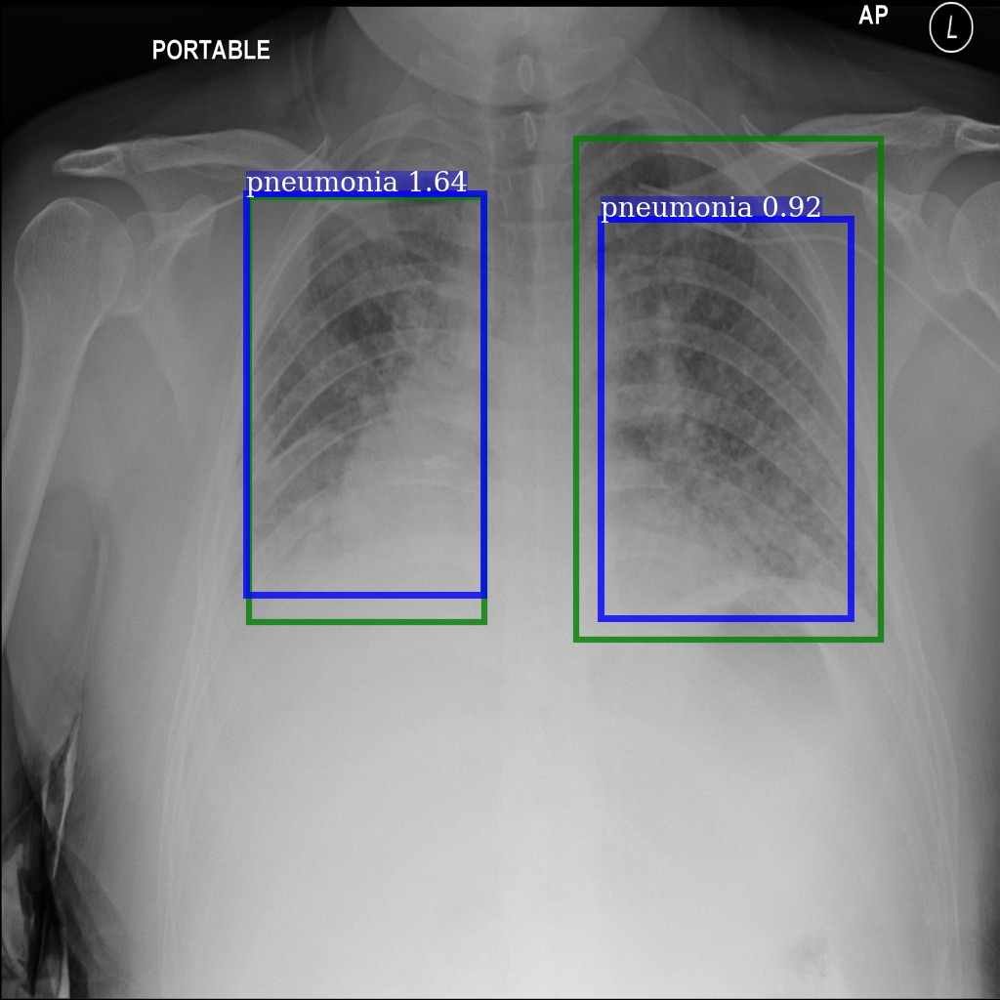
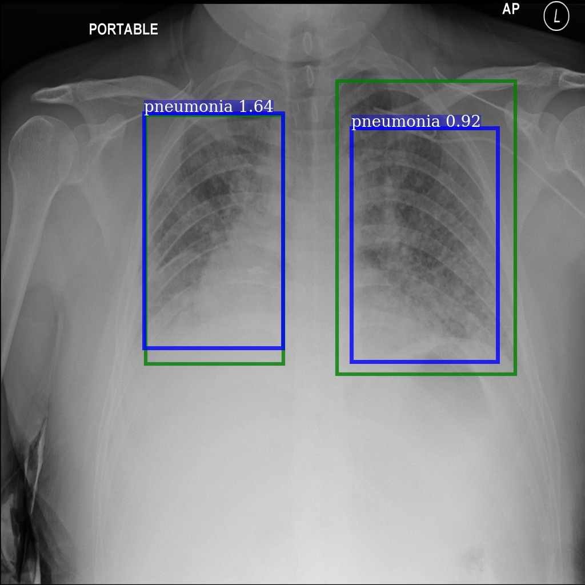

Improvement of 3D Semantic Completion from a Single Depth Image
Jiaxiang Ren Liangxin Gao Yanbo Zhang
Competition Information
Building an algorithm to automatically detect and locate lung opacities on chest radiographs.

Background Information
Pneumonia accounts for over 15% of all deaths of children under 5 years old internationally. In 2015, 920,000 children under the age of 5 died from the disease. In the United States, pneumonia accounts for over 500,000 visits to emergency departments [1] and over 50,000 deaths in 2015 [2], keeping the ailment on the list of top 10 causes of death in the country.
While common, accurately diagnosing pneumonia is a tall order. It requires review of a chest radiograph (CXR) by highly trained specialists and confirmation through clinical history, vital signs and laboratory exams.
To improve the efficiency and reach of diagnostic services, the Radiological Society of North America (RSNA) has reached out to machine learning community of Kaggle and collaborated with the US National Institutes of Health, The Society of Thoracic Radiology, and MD.ai to develop a rich dataset for this challenge.
Our Solutions
Our final model is mainly based on keras-YOLOv3 with Hard Negative Mining(HNM) to reduce false positive rates. Among 1499 competitors, our team finally achieved the 39th place (Top 3%). Listed below are what we have tried in this competition.
- keras-yolo3, with deliberate anchor aspect,HNM and custom loss function. mAP: 0.200. [Keras]
- Keras-SSD, with deliberate anchor aspect. mAP: 0.153. [Keras]
- SNIPER, with multiscale training/testing. Non-HNM mAP: 0.155. HNM version unfinished. [MXNet]
- Cascade-RCNN, with deliberate anchor aspect, multiscale training and different backbone models. mAP: 0.158. [Detectron]
- Keras-RetinaNet, with deliberate anchor aspect, different backbone models and custom loss function. mAP: 0.157. [Keras]
Project Requirement
- Softwares: Ubuntu 16.04 TLS, Keras 2.2.2, Detectron@e8942c8, MXNet@1678b4a
- Hardwares: NVIDIA Tesla V100 (16GB), RAM 64GB
Introspection
What a terrific competition! It not only hones my coding skills, but also gives me more insights into prevailing models. Despite the not so good rank, lots of practical and valuable ideas need marking down.
- A clear definition of problem is crucial for high scores.
- A flexible framework of model also matters. (Both 2nd and 3rd take Keras-RetinaNet as their main model.)
Detection Results
|
Good Detection (Green box: ground truth; blue box: prediction) 
Poor Detection
|
 

Reference
[1] P. Rui and K. Kang. National Ambulatory Medical Care Survey: 2015 Emergency Department Summary Tables. Table 27. Available from: www.cdc.gov/nchs/data/nhamcs/web_tables/2015_ed_web_tables.pdf
[2] Deaths: Final Data for 2015. Supplemental Tables. Tables I-21, I-22. Available from: www.cdc.gov/nchs/data/nvsr/nvsr66/nvsr66_06_tables.pdf